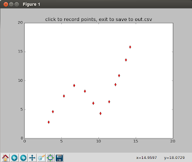

Tıklamaları Örnek Veriye Çevirmek
Bazen belli bir şekilde olan veri noktalarını kabaca tıklayarak üretmek gerekebilir, bu noktaları metin editör içinde yazmak zor olur, görsel yaklaşım tercih edilebilir. Bu işi yapacak basit bir Python programı altta
import pandas as pd
from matplotlib import pyplot as plt
class PointRec:
def __init__(self, line, ax, fig):
self.line = line
self.ax = ax
self.fig = fig
self.xs = list(line.get_xdata())
self.ys = list(line.get_ydata())
self.cid = line.figure.canvas.mpl_connect('button_press_event', self)
def __call__(self, event):
if event.inaxes!=self.line.axes: return
self.xs.append(event.xdata)
self.ys.append(event.ydata)
self.ax.plot(event.xdata, event.ydata,'rd')
self.fig.canvas.draw()
fig = plt.figure()
ax = fig.add_subplot(111)
ax.set_xlim(0, 20);ax.set_ylim(0, 20)
ax.set_title('click to record points, exit to save to out.csv')
line, = ax.plot([0], [0])
rec = PointRec(line,ax,fig)
plt.show()
df = pd.DataFrame([rec.xs, rec.ys]).T
df.columns = ['x','y']
df.to_csv("out.csv",index=None)
Program tıklamaları hafızada biriktirerek tutar, ve program
kapatıldığında veriyi out.csv dosyasına yazar.

Anahtar kelimeler: click, onclick, sample data, ornek veri, uretmek